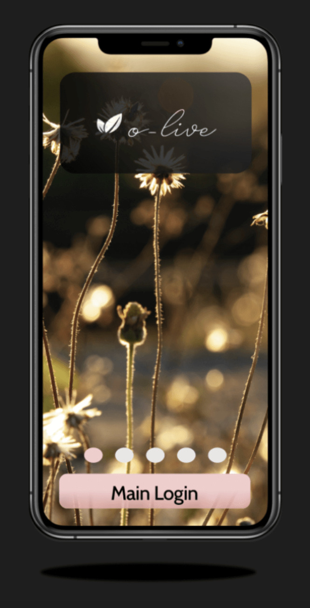
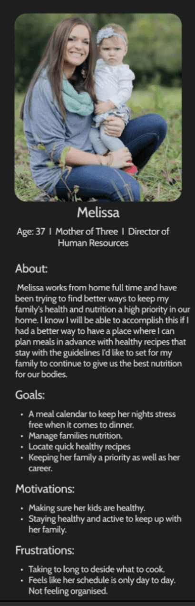

Olive
Objective:
Allowing parents to gain their confidence back by logging into a responsive health and wellness portal to track their wellbeing
Problem Statement:
"Parents need a way to feel confident in their health and wellness, because they spend a large amount of time focusing their attention on their families they tend to lose their self confidence"
My Role:
UX Researcher, UX Designer, and UI Designer
Duration:
October 2021 - July 2022

Competitive Analysis
The Process to gain strategic insights into existing designs of health and medical tracking applications, I researched ten competitor products then condcted detailed SWOT, UX and marketing analysis on the top two rated from the group.
Key Competitive Analysis Findings
Give the users a short preview how to use tha application.
Access to medical records for the whole family.
The app is free, safe and reliable.
Updates about every week, application keeps improving
A place to imput dietary restrictions for personal recommendations on recipes
Personal trainers, Coaches and Dietitians all in one place.
Interviews
Before I started designing olive, I needed to gather data regarding user demographics, needs and opinions on health portals. I interviewed six individuals via moderate in-person and moderate remote.
Interview Key Insights
All of my participants like keeping track of water and calorie intake.
Each participant keep their medical records printed and in a folder for the whole family (great idea to have access on an app)
All participants wish they were able to make more time for themselves but feel like their time and energy is focused on others.
Highly recommended that with kids getting older and learning responsibility with organization and accountability
Each participant stated they would love to be able to focus on themselves if they could find the time to.
User Personas
Based on data collected through surveys and interviews, my next step was to develop user personas. I created three personas to help guide and inform my design decisions further down the line.



User Journeys & User Flows
Next, I used my user personas and mappped out how users might interact with the design. step by step, using user journey maps that led to user flows. User journey maps helped me have a clear visual on how the users would interact with the app while also having the benefits of understanding their thoughts and feelings. The user journey maps that were created were the starting point of creating specific user flows. Designing the user flows gave me a very clear to-do list of what pages to make when wireframing

Site Map
In coming up with the design structure for olive, I designed a sitemap to determine the page hierarchy and navigation. My main goal was to keep olive's navigation as clean and simple as possible, to help users focus on one simple task at a time.
First Sitemap
Card Sorting
Key Findings
Out of the seven participants I noticed there were quite a bit of confusion when it came to friends/community and the blog and where they belonged.
All participants had a very clear understanding when it came to exercise and personal wellness and which category they belonged to.
One of the major insites I recieved during this project was to change the whole outline of the medical side of the app, to make it more realistic and specific.
Refind Sitemap
Wireframing
Login Screen Wireframes:
Calendar Screen Wireframes:
Recipe Screen Wireframes:
Usability Testing
I conducted usability tests with six participants over four days. During testing my goal was to determine the functioning and usability of olive by testing core features of the app. I wanted to know if users were able to accomplish three tasks:
1. Can users easily navigate the app?
2. is the application easy to manuver?
Are the users struggling in any way?
Affinity Map & Rainbow Spreadsheet
After completing the testing, I first compiled errors and observations in an affinity map. Doing so helped me create a rainbow spreadsheet, in which I could track the feedback of each participant, prioritize problems and brainstorm possible solutions.
Key Insights from Usability Testing
The ability to see what fuctions actually worked.
Able to correct minor errors throughout the application.
Insight on moving the location of different catagories.
Adding face recognition to our application.
Final Mockups
Using feedback from the usablility tests and the insights of slack colleges, I created my final mockups for Olive.